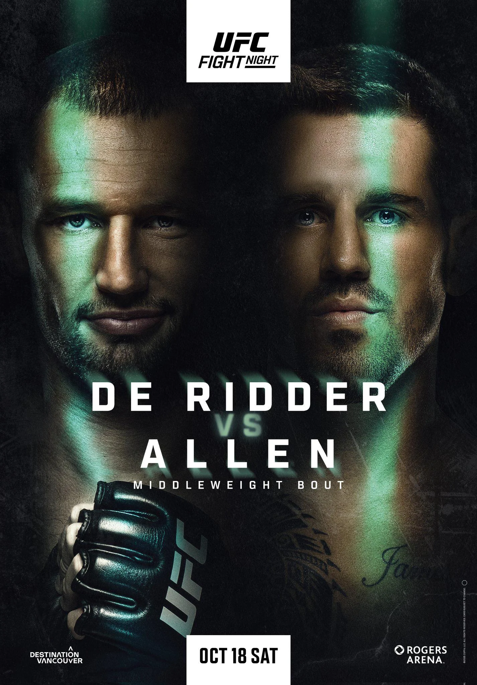

UFC Fight Night de Ridder vs. Allen Recap
Saturday 10.18.2025 at 04:00 PM ET • Rogers Arena
Table of Contents
- Summary
- Main Card
- Prelims
Summary
On Saturday, October 18, 2025, the UFC returned to Vancouver with a middleweight showdown between Brendan Allen and Reinier de Ridder in the main event. What was originally supposed to be a title eliminator between de Ridder and Anthony Hernandez turned into something completely different when Allen stepped in on short notice, and the result was a statement-making performance that shook up the middleweight division.In the main event, Brendan Allen proved why he's been one of the most underrated fighters in the middleweight division. Taking the fight on just 3.5 weeks' notice against a surging de Ridder, Allen dominated with devastating ground and pound that ultimately forced de Ridder's corner to retire him after the fourth round. With the win, Allen positioned himself for a potential fight against the top contenders in the division.
The co-main event saw Mike Malott get back on track with a unanimous decision win over Kevin Holland, though the fight was marred by controversy due to multiple groin shots that clearly affected Holland's ability to compete. Meanwhile, Canadian favorite Aiemann Zahabi extended his win streak to seven with a split decision victory over Marlon Vera in front of a raucous home crowd.
Other notable performances included Manon Fiorot's first-round destruction of Jasmine Jasudavicius, announcing her return to title contention after losing to Valentina Shevchenko earlier in the year. Charles Jourdain looked sharp at bantamweight, submitting Davey Grant with a guillotine choke in the first round. The prelims featured some controversy as well, with Dan Miragliotta making questionable decisions in the Nelson vs. Frevola fight.
Overall, the card delivered solid action from top to bottom, earning its 7.1/10 rating. While it didn't have the star power of a pay-per-view, the fights were competitive, the finishes were entertaining, and the main event provided real implications for the middleweight division. The Canadian crowd brought incredible energy, especially for Zahabi's victory, making this a memorable Fight Night event.
Main Card
Brendan Allen vs. Reinier de Ridder
Result: KO/TKO, Retirement at 5:00 Round 4 of 5, 20:00 Total
Reinier de Ridder entered the UFC in November 2024 at UFC Fight Night: Magny vs. Prates and immediately went on a tear, entering his fifth fight in a 12-month period. All four previous fights resulted in wins, with his biggest victory coming against Robert Whittaker at UFC Abu Dhabi in July. Brendan Allen came into this fight on short notice to replace Anthony "Fluffy" Hernandez, who had pulled out. Allen had mixed success lately but was coming off a dominant unanimous decision win over Marvin Vettori at UFC 319 in July.
 Originally, the fight between Hernandez and de Ridder was set to be a title contender fight, with the two racing against the winner of Imavov vs. Borralho at UFC Paris in September. The winner with the better performance was going to get the next shot against Chimaev. Even with Hernandez pulling out, de Ridder showed how game he was by shifting focus to take a much riskier fight against Brendan Allen, with no title fight guarantees.
Originally, the fight between Hernandez and de Ridder was set to be a title contender fight, with the two racing against the winner of Imavov vs. Borralho at UFC Paris in September. The winner with the better performance was going to get the next shot against Chimaev. Even with Hernandez pulling out, de Ridder showed how game he was by shifting focus to take a much riskier fight against Brendan Allen, with no title fight guarantees.
The fight started with de Ridder using a judo throw to get Allen to the ground early in the first. He threatened an arm triangle to no avail. After taking the back, Allen just went for wrist control to prevent de Ridder from securing a choke. Allen spent the rest of the first round playing defense, praying that de Ridder did not score a TKO win or submission.
Allen bounced back well in Round 2 with devastating ground and pound from the mount position, delivering brutal elbows to de Ridder's face. In the third, de Ridder went back to his bread and butter, getting an immediate body lock that led to a takedown and back take. Allen then reversed the position and brought the fight back to his world, going back to the devastating ground and pound. Allen spent the next three minutes delivering punishment to de Ridder. de Ridder attempted a reverse triangle in the last 20 seconds that didn't succeed. Allen took the third to go up 2-1, and de Ridder wobbled back to the stool completely gassed.
Allen landed a body slam in the fourth! He continued the rest of the round smothering de Ridder from mount and took the fourth. Going into the last round, de Ridder needed a finish to keep his title fight aspirations alive, but he was spent. What a sight in between the fourth and fifth rounds—referee Jason Herzog went over to de Ridder's corner and called the fight, declaring it a TKO. Unreal. Title fight aspirations gone.
As a takeaway from this fight, Hernandez is definitely next for the title fight. This fight was rather lackluster, though the scrambles were entertaining. Not only that, but are the top contenders within the middleweight division overrated? You have a contingent of fighters—Strickland, DDP, Adesanya, Whittaker, Costa—who just fight amongst themselves without giving many opportunities to up-and-comers like Allen, Hernandez, Imavov, and Borralho. Are they actually better?
For de Ridder, it's time to take some time off. Four months minimum. Time to go back home, rest, recover, and spend some time with your family. I think that if the schedules line up, run the Hernandez fight back. In the post-fight interview, Brendan Allen called out Chimaev, DDP, and Strickland. I think that the DDP fight is the most likely and most intriguing fight for Allen next. There's bad blood, and it will take him a step closer to the title. Big win from Brendan Allen, taking the fight on 3.5 weeks' notice!
Mike Malott vs. Kevin Holland
Result: Decision, Unanimous at 3 Rounds, 15:00 Total
The journeyman Kevin "Big Mouth" Holland continues to be a fan favorite as he looked to get his third win of the year. I am fed up with Kevin Holland because I don't understand what he's trying to do. He isn't particularly good, and isn't particularly funny. His fights are somewhat entertaining, but his card placement does not make sense for what he brings to the table. After suffering a setback losing to Neil Magny at UFC 297, Mike Malott looked to build a three-fight win streak and start getting higher-ranked opponents.
A controversial groin shot from Malott led to a five-minute stoppage in the first round but resulted in no point deduction. Even after five minutes of timeout, Kevin Holland was still hurting and holding his groin for the last minute of the first. This was also the second groin shot in about 60 seconds in the first round. Optically it looked terrible. Holland should not have kept fighting, because no one wants to see this. Kevin Holland spent the time between rounds just complaining about his groin.
They brought a doctor in to "evaluate" Kevin Holland. All the doctor did was ask Holland, "Can you continue?" Weird. What is a doctor going to do without a full inspection by taking his pants off? The fight was lackluster in the second. Malott was clearly timid because he didn't want to either get another groin shot or had some respect for Holland. Holland was still in pain.
Malott was wearing it much more in the third round. Holland came back with some big shots. Malott employed some slick grappling in the last 90 seconds of the third round. Malott took the unanimous decision, winning the last two rounds. Malott is now on a three-fight win streak, while Kevin Holland loses his last two. It is unfortunate because the groin shots definitely had a large impact on the overall result of the fight.
Malott will re-enter the rankings. I think that a fight against Daniel Rodriguez makes sense for him next.
Aiemann Zahabi vs. Marlon Vera
Result: Decision, Split at 3 Rounds, 15:00 Total
After getting schooled by O'Malley in the most undeserved title shot at UFC 299 and losing to Deiveson Figueiredo at UFC Fight Night: Sandhagen vs. Nurmagomedov, Vera looked to get back on track after over a year out of the cage. Zahabi, riding a six-fight win streak and coming off a big win over Jose Aldo at UFC 315, looked to get his seventh consecutive win and become a legitimate title contender at bantamweight.
Zahabi moves much better than Chito—circles and feints a lot more. Chito just moves forward and backward and hopes that his chin holds up. The first round was even, with Zahabi much more active, but Chito gave Zahabi a bloody nose. Something happened to Chito's ring finger on his left hand as seen on the replay.
Vera got a big knockdown in the second with his jab, but Zahabi recovered—arguably grabbed the fence to stay in the fight. Vera continued to follow up with big combinations, including a memorable body shot. Zahabi finished the round pouring pressure onto Vera to gain some respect, but not enough to win back the round.
Vera was mocking Zahabi in the third by imitating Zahabi's hand motions. The boys were scrapping in the third. Big left hand from Zahabi that made a big reaction from Vera. Zahabi blitzed with a minute left to go in the third and showed incredible heart in front of the Canadian home crowd. Barn burner, with the lads throwing everything in the last 10 seconds of the third.
Split decision for Aiemann Zahabi. Zahabi increases his win streak to seven, and Vera drops to 0-3 in his last three. I think that Vera won the fight because he broke Zahabi's nose in the first. I think that Vera wins that fight anywhere besides Canada.
Vera will have to see what his future is within the promotion. Regardless, if he stays with the UFC, he will need to fight far down the rankings. Zahabi called out Sugar Sean O'Malley, but I don't think that will happen because rumors are that O'Malley will fight Song Yadong. I think Zahabi gets sparked by O'Malley. I think a fight with Deiveson Figueiredo would have been a better callout. I think they'll give him Cory Sandhagen, and then the Zahabi hype train should finally come to a stop.
Manon Fiorot vs. Jasmine Jasudavicius
Result: KO/TKO, Punches and Knees at 1:14 Round 1 of 3
Fiorot was coming off a title fight unanimous decision loss to Valentina Shevchenko at UFC 315 and was looking to get back on track. After losing to Tracy Cortez at UFC Fight Night: Grasso vs. Shevchenko 2 by unanimous decision, Jasudavicius was currently on a five-fight win streak, on the brink of a title shot. Notable wins included Jéssica Andrade at UFC 315—a former champion—and Mayra Bueno Silva at UFC Fight Night: Adesanya vs. Imavov, a former title challenger.
Boos echoed throughout the stadium with Dan Miragliotta back reffing after the Nelson vs. Frevola blunder earlier in the card. It was a quick night at the office for Manon, as Fiorot clipped Jasudavicius in the first and then destroyed her with ground and pound for the win in the first round! Fiorot solidifies herself as a contender in the flyweight division.
Natalia Silva is next for the flyweight title after the title fight at MSG at UFC 323. If Shevchenko gets it done next week, Fiorot definitely needs one more win before getting back to the title. She should wait to see who fights for the title and how the fight between Erin Blanchfield vs. Tracy Cortez goes at UFC 323 at MSG.
Jasudavicius could come back soon if she wanted to. She probably needs to take a step back and fight back in the rankings. A Miranda Maverick fight makes sense next in my opinion.
Charles Jourdain vs. Davey Grant
Result: Submission, Guillotine Choke at 3:05 Round 1 of 3
NASTY FIRST ROUND FINISH FROM CHARLES JOURDAIN!
— THE MMA GURU (@THATBOYMMAGURU) October 19, 2025
Big flying knee near KO win and then latches up the guillotine as predicted. #UFCVancouver
Didn't let his bro steal the thunder, huge win from Charles, a new big name in this division.
Jourdain vs Rosa's Jr next?
Jourdain is looking good at bantamweight, going 2-0 in his first two bouts. Marcus McGhee is a good callout for Jourdain, but it would be a big jump up the rankings. If he doesn't get McGhee, then I think that Bryce Mitchell would be a good matchup before going for a top 15 ranking.
Kyle Nelson vs. Matt Frevola
Result: Decision, Unanimous at 3 Rounds, 15:00 Total
Frevola was on a two-fight losing streak—gnarly KOs from both BSD and Fares Ziam. He took a year off after each of the losses. The fight was pretty even on the feet in the first, with Frevola able to get a takedown. Nelson hit Frevola with a big head kick at the end of the first. Nelson knocked him down and then finished him with ground and pound with three seconds left in the first round.
At the end of the round, Dan Miragliotta said that the fight wasn't over and the fight kept going on. Absolutely heinous—the fight was declared over! Miragliotta said that he heard the horn, but it clearly didn't ring. Unacceptable. Frevola was seriously gassed as the fight went on.
Frevola is now 0-3 in his last three. I don't know what lies ahead for him in the UFC. Nelson made his lightweight debut and looked alright. Frevola is not the crème de la crème. I think that Chase Hooper could be a good next fight for Nelson.
Prelims
Drew Dober vs. Kyle Prepolec
Result: KO/TKO, Punches, Knees, and Elbows at 1:16 Round 3 of 3, 11:16 Total
Drew Dober was on a three-fight losing streak before coming into this one. Besides being good looking, I don't know what Dober is good at. Southpaw vs. southpaw. At the beginning, Dober was able to 'fight his fight'—leading the dance and putting the pressure on Prepolec.
Dober split his left shin after throwing tons of low calf kicks to Prepolec's shin. Nasty. Dober was getting beat up, but I felt like Dober was hitting Prepolec with a lot more volume. Prepolec was having success, really laying into Dober in the second, forcing Dober to go to a single leg.
Nasty low blow to Prepolec in the third—excruciating pain. The commission told the ref to take a point, but the ref was hesitant. He ultimately took a point, which was strange because it seemed like he only took it because Prepolec was taking a long time to recover. Prepolec took about four minutes off. Dober got a second wind and then went out there and finished the fight, effectively saving his career.
If Dober doesn't give a low blow, he loses the fight 10 out of 10 times.
Aoriqileng vs. Cody Gibson
Result: KO/TKO, Straight Right to Hammerfists at 0:21 Round 1 of 3
Gibson came into this fight with a good camp, having pulled back on teaching (went from full-time teacher to just a sub). He made a "Google Doc" to track heart rate, chest strap monitor, Oura ring...the works. He got absolutely starched by Aoriqileng in the first with a brutal right hand to the chin. The Mongolian followed up with some ground and pound, and the fight was arguably stopped early.
Ultimately, crap like heart rate doesn't matter unless you go the distance. If you walk into punches, who cares if you get out of zone 2? Gibson at 38 should look to retire (2-4 in his last six). I don't know what's next for Aoriqileng.
Bruno Silva vs. Hyun Sung Park
Result: Submission, Rear Naked Choke at 2:15 Round 3 of 3, 12:15 Total
Silva cut Park with a hammerfist elbow. Park couldn't hold Silva down and couldn't win exchanges on the feet. Silva was winning the grappling on the ground but not doing much with it—for example, he threatened a fake arm triangle attempt.
Park came out swinging in the third, attacking the liver, etc. Silva sank in a rear-naked choke in the third and got a quick tap over Park. Silva defends his top 15 spot and snaps a two-fight loss streak over Kape and Kai Kara-France.
Now on a two-fight losing streak, losing to Taira and now Silva, things are starting to look dicey for Park. If Kai Asakura doesn't go up to bantamweight, book it—battle of the East Asians.
Djorden Santos vs. Danny Barlow
Result: Decision, Unanimous at 3 Rounds, 15:00 Total
Barlow is the "Left Hand of God." Santos was checking Barlow's inside low kicks. Barlow was throwing oblique kicks. Santos nearly knocked Barlow down with inside low kicks. The ref stopped the fight for both an eye poke on Santos and a dropped mouthpiece.
WANT A ROUND!?!?! Barlow piecing up Santos with the left and Santos is out on the feet. Somehow stays alive and is able to clip Barlow bad late, and nearly finishes him…I had that one 10-9 Barlow…all tied up going into the third #UFCVancouver
— Patroklos Stefanou (@formyxscarfalo1) October 18, 2025
As he gets tired, Barlow's hands continue to fall lower and lower. He needs to clean that up if he is to start fighting higher-level competition. Barlow fell down and pulled guard, which was a terrible decision in the third. Santos won the grappling exchanges with ground and pound.
Barlow is super one-dimensional—only has got a left hand. He's a "one-trick pony." Now on a two-fight losing streak, he needs to work on his game.
Stephanie Luciano vs. Ravena Oliveira
Result: Submission, Rear Naked Choke at 2:50 Round 3 of 3, 12:50 Total
I didn't pay much attention to this fight. Luciano dominated the fight and scored a rear-naked choke in the third round.
Yousri Belgaroui vs. Azamat Bekoev
Result: KO/TKO, Punches at 0:55 Round 3 of 3, 10:55 Total
Bekoev came in with two nasty first-round KOs (Zach Reese and Ryan Loder). This turned into target practice for Belgaroui. Belgaroui fought like the taller fighter—kept his range, knees up the middle, good takedown defense.
Belgaroui struggled on the Contender Series in 2023, losing to Tulio by unanimous decision. He went and rattled off two wins in Levels Fight League and returned to the Contender Series in 2024 and scored a first-round KO over Taiga Iwasaki. Belgaroui is now on a four-fight win streak.
He has fought both Adesanya and Pereira in kickboxing and has a win over Pereira. At 33 years old, it's time to make some moves in middleweight.
Melissa Croden vs. Tainara Lisboa
Result: KO/TKO, Punches From Top Position at 4:32 Round 3 of 3, 14:32 Total
Croden is bigger and longer. She was winning exchanges on the feet—stiff jab and big hooks. The second round was extremely dominant from Croden with intense ground and pound that Lisboa had no answer for. DC kept saying, "You gotta watch out for the armbar," whenever Croden was smothering Lisboa, and the only reason she was threatening it was because her legs were in the most insane position because she was getting dominated.
Nasty TKO win from Croden in her UFC debut.